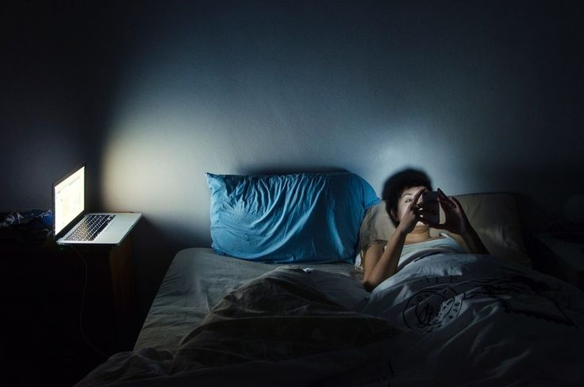
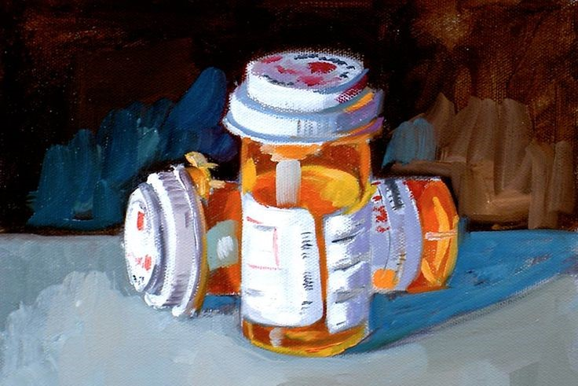

Featured Articles

Defining Cyberbullying and its Relevance in Modern Society
By Louise Felicio
Have you ever been a victim of or partaken in cyberbullying? First, let us define what it is. What is cyberbullying? Cyberbullying is a form of...see more

The Devastating Impact of Cyberbullying
By Hyzah Shin Abdulkadil
Cyberbullying, which happens online, has been getting worse, especially for kids and teenagers. The COVID-19 pandemic worsened it because...see more

Breaking the Silence: Creating a Secure Online Environment to Stop Cyberbullying
By Jhielou Marie Mamaradlo
When bullying happens online, it can feel like you're being attacked everywhere, even at home. There could appear to be no escape route. The most typical symptoms of cyberbullying include...see more